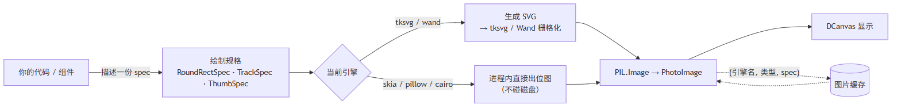
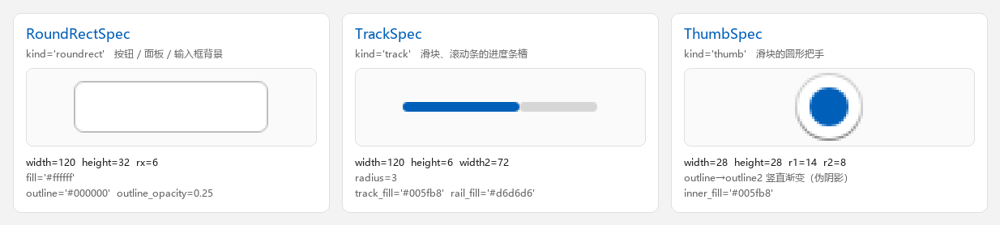
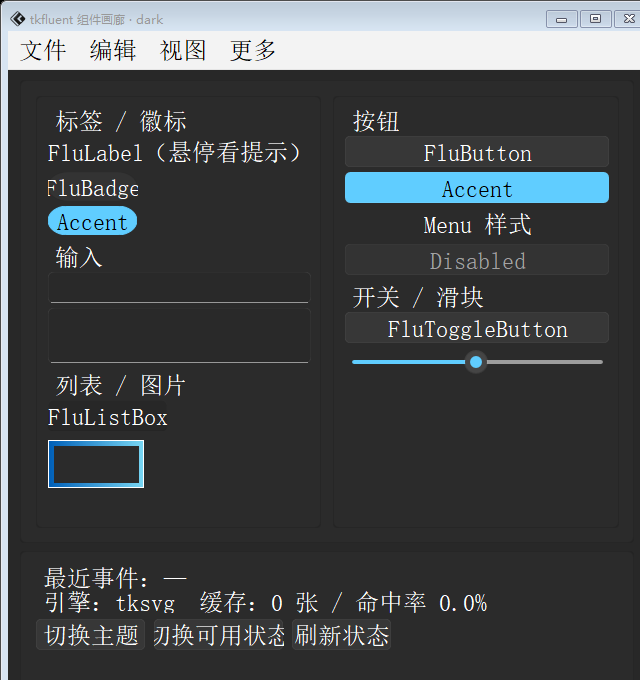
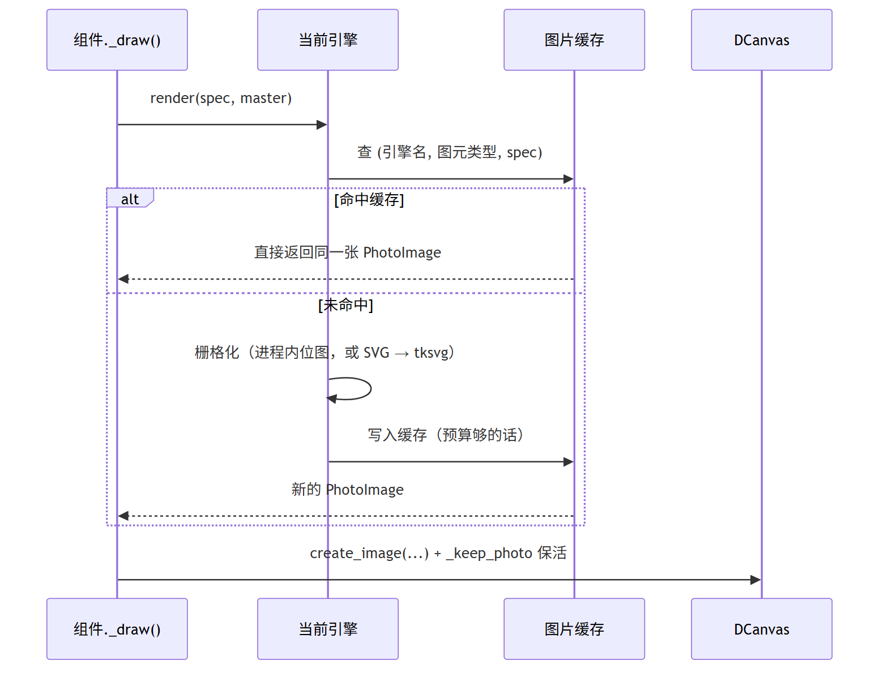
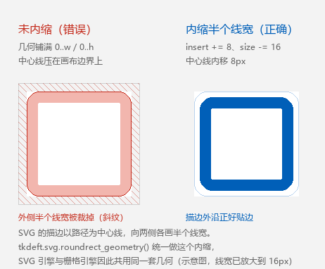

概念与架构
tkdeft 只做一件事：把矢量绘图变成 Tkinter 控件。为了做到这一点，它把过程拆成了
三段，每段都可以单独替换。

三个概念
绘制规格（spec）：只描述"画什么"
规格是不可变的 dataclass，只有尺寸、圆角、颜色、透明度这些"内容"， 不含任何"怎么画"的信息：
from tkdeft.engines import RoundRectSpec
spec = RoundRectSpec(
width=120, height=32, rx=6, # 尺寸与圆角
fill="#ffffff", # 填充
outline="#000000", outline_opacity=0.25, outline_width=1,
)
spec.kind # 'roundrect' —— 与引擎上的 render_roundrect() 对应
spec.pixels # 3840 —— 缓存预算按它核算
spec.to_dict() # 转成普通字典，便于打日志
坐标一律以自身左上角为 (0, 0)；规格描述的是"一张位图长什么样"，
不是"摆在窗口的哪里"。要按画布坐标构造，用 RoundRectSpec.from_box(x1, y1, x2, y2, radius)。
| 规格 | kind |
用途 |
|---|---|---|
RoundRectSpec |
roundrect |
按钮、面板、输入框背景 |
TrackSpec |
track |
滑块、滚动条的轨道（选中段 + 底轨） |
ThumbSpec |
thumb |
滑块的圆把手（渐变伪阴影 + 两层填充） |

绘制引擎（engine）：只负责"用什么画"
引擎实现 render_roundrect(spec) 之类的接口，返回一张 PIL.Image。
tkdeft 内置 5 个，随时可切，也可以自己注册：
from tkdeft.engines import describe_engines, set_engine
set_engine("skia")
describe_engines()[2]
# {'name': 'skia', 'index': 2, 'kind': 'raster', 'available': True,
# 'requires': ('skia', 'numpy', 'PIL'), 'aliases': ('2',), 'current': False, ...}
只有 kind == "raster" 的引擎会走快速路径；tksvg / wand 是 SVG 系，
它们不参与栅格化，画布遇到它们会自动回退到 SVG 实现。
画布与控件：负责"摆在哪、什么时候重绘"
DCanvas 是带绘制能力的画布；
- 它的
draw_roundrect/draw_track/draw_thumb会先问引擎， 引擎不参与就自动回退 SVG，所以调用方只需要写一行； - 它替你保活
PhotoImage（否则图片会被 GC，画布变空白）； - 它按 item id 记录引用，并在控件销毁时回收临时文件。
DDrawWidget 再往上加一层交互骨架：
把鼠标与焦点事件翻译成 enter / button1 / isfocus 三个状态位，
然后调你的 _draw()。控件状态与取值见 自定义组件。
控件长什么样，完全由"配置字典 + _draw()"决定，所以换主题就是换一份字典再重绘一次：

一次重绘发生了什么

PhotoImage两个关键点：
- 同尺寸同配色的一组控件共用同一张图片——这就是"缓存命中"能快几百倍的原因；
- 缓存不做 LRU 淘汰，而是按像素预算（默认 8M 像素）"满了就不再写入"。
因为
PhotoImage一旦被回收，引用它的画布 item 会变成空白——淘汰等于损坏画面。 详见 绘制引擎。
描边为什么必须内缩
SVG 的描边是以路径为中心线向两侧各画半个线宽。如果矩形几何铺满 0..w / 0..h，
描边中心线就正好压在画布边界上，外侧那半个线宽落到画布之外：

tkdeft.svg.roundrect_geometry() 是唯一的几何实现，SVG 引擎与栅格引擎共用它，
所以两条路径画出来的东西是一致的。自己拼 SVG 时请直接用
tkdeft.svg.add_roundrect()，不要手写 translate(0.5, 0.5)。
{kind=link}
图片保活：Tkinter 的经典陷阱
Tkinter 的画布元素不会替 Python 侧持有 PhotoImage 引用。图片对象一旦被 GC，
对应的 canvas item 就变成空白：
# ✗ 只存"最后一张"：画第二张时第一张就失去引用
self._tkimg = canvas.svgdraw.create_svg_image(path)
canvas.create_image(0, 0, anchor="nw", image=self._tkimg)
# ✓ 让画布按 item id 保管
photo = canvas.svgdraw.create_svg_image(path)
item = canvas.create_image(0, 0, anchor="nw", image=photo)
canvas._keep_photo(item, photo)
用 draw_roundrect 这类统一入口时，保活是自动的。更多症状与排查见
常见问题与排查。
引擎能力对照
tksvg（默认） |
wand |
skia |
pillow |
cairo |
|
|---|---|---|---|---|---|
| 类型 | SVG | SVG | 栅格 | 栅格 | 栅格 |
| 额外依赖 | 无 | Wand |
skia-python |
无 | pycairo |
| 走画布快速路径 | ✗ | ✗ | ✓ | ✓ | ✓ |
椭圆圆角（rx != ry） |
✓ | ✓ | ✓ | ✗ 只支持单一半径 | ✓ |
| 抗锯齿 | tksvg 自带 | ImageMagick | 最好 | 超采样 | 原生 |
默认仍是 tksvg：栅格引擎与它有亚像素差异，为了让老项目升级后一个像素都不变。
目录导览
| 你在想什么 | 去读 |
|---|---|
| "先让我跑起来" | 快速上手 |
| "引擎怎么选、缓存怎么配" | 绘制引擎 |
| "我要写自己的组件" | 自定义组件 |
| "它到底快多少、怎么验" | 回归与性能 |
| "报错了" | 常见问题与排查 |
| "从 0.2 升上来要注意什么" | 从 0.2 升级到 0.3 |
| "某个函数签名是什么" | API 文档 |